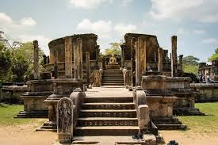
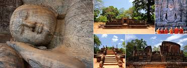
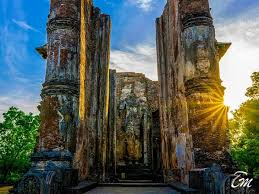

Polonaruwa Ancient City
 
Poḷonnaruwa, also referred as Pulathisipura and Vijayarajapura in ancient times,
is the main town of Polonnaruwa District in North Central Province, Sri Lanka.
The modern town of Polonnaruwa is also known as New Town,
and the other part of Polonnaruwa remains as the royal ancient city of the Kingdom of Polonnaruwa.
The second-oldest of all Sri Lanka's kingdoms, Polonnaruwa was first established as a military post by the Sinhalese kingdom.
It was renamed Jananathamangalam by the Chola dynasty after their successful invasion of the country's then capital,
Anuradhapura, in the 10th century. The Ancient City of Polonnaruwa has been declared a World Heritage Site.
Modern Polonnaruwa is undergoing a major development project known as the "Awakening of Polonnaruwa,"
championed by former President Maithripala Sirisena.
It envisions the development of all sectors in Polonnaruwa including roads, electricity,
agriculture, education, health and environment.
 Location (Polonaruwa)